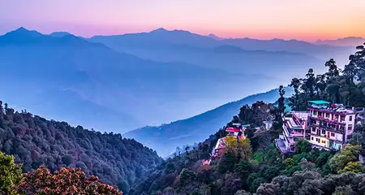
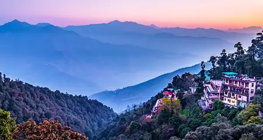

Dehradun-Travel Guide: Best Place to Visit
The City Of Love | June 30,2024
The City Of Love | June 30,2024
Nestled amidst the majestic Himalayan ranges, Dehradun is a captivating city that has long enchanted visitors with its picturesque landscapes, rich cultural heritage, and serene ambiance. As the capital of the northern Indian state of Uttarakhand, Dehradun serves as a gateway to some of the most breathtaking natural wonders in the country. Geographically, Dehradun is situated in the Doon Valley, a lush, fertile basin flanked by the Shivalik ranges and the Himalayas. This strategic location has endowed the city with a temperate climate, making it a popular year-round destination. The city's rolling hills, verdant forests, and meandering rivers create a serene and picturesque setting that has inspired artists, writers, and travelers alike. One of Dehradun's most iconic landmarks is the Robber's Cave, also known as Guchhupani. This natural cave system, carved by the flowing waters of a stream, is a popular tourist attraction. Visitors can explore the winding tunnels and marvel at the crystal-clear pools that have formed over time. Another must-visit site is the Mindrolling Monastery, a Tibetan Buddhist monastery that showcases exquisite Tibetan architecture and serves as a hub for spiritual practice and cultural preservation. The city's rich history is evident in its numerous heritage sites, such as the Tapkeshwar Temple, a Shiva temple dating back to the 7th century, and the Malsi Deer Park, a wildlife sanctuary that was once a hunting ground for the Mughal emperors. Dehradun is also home to several prestigious educational institutions, including the Indian Military Academy, the Forest Research Institute, and the Wadia Institute of Himalayan Geology, which have contributed to the city's reputation as a center of learning and research. Beyond its historical and cultural attractions, Dehradun is a hub for outdoor enthusiasts. The city's proximity to the Himalayas offers a wealth of opportunities for adventure sports, such as trekking, rock climbing, and river rafting.

Shikhar Fall, located in Dehradun, Uttarakhand, India, is a picturesque natural wonder that captivates visitors with its stunning beauty. Nestled amidst the lush green hills of the Himalayas, this waterfall is a true gem of the region. One of the unique features of Shikhar Fall is its sheer height, which measures an impressive 54 meters (177 feet). The cascading water plunges down the rocky cliffs, creating a mesmerizing display of power and grace. The fall's name, "Shikhar," which means "peak" in Hindi, aptly describes its location at the top of a hill, offering a panoramic view of the surrounding landscape. The area around the waterfall is shrouded in a serene and tranquil atmosphere, with dense forests and lush greenery providing a soothing backdrop. Visitors can explore the nearby hiking trails, which offer breathtaking vistas and the opportunity to immerse themselves in the natural beauty of the region. Another unique aspect of Shikhar Fall is its accessibility. Unlike many remote waterfalls, Shikhar Fall is relatively easy to reach, making it a popular destination for both local and international tourists. The well-maintained road network and the availability of nearby accommodation options make it a convenient and enjoyable experience for visitors. The waterfall also holds cultural significance, as it is believed to be the site of various spiritual and religious rituals. The serene atmosphere and the natural beauty of the location have made it a popular spot for meditation and introspection.
Pacific Mall, located in Dehradun, Uttarakhand, India, is a unique and vibrant shopping and entertainment destination that has become a landmark in the city. Spread over a sprawling area, this mall offers a diverse range of experiences for visitors. One of the most unique features of Pacific Mall is its architectural design, which seamlessly blends modern and traditional elements. The building's façade is adorned with intricate patterns and motifs, reflecting the rich cultural heritage of the region. The interiors are spacious and well-lit, creating a warm and inviting atmosphere for shoppers. Another distinctive aspect of Pacific Mall is its diverse range of retail outlets. From high-end fashion brands to local artisanal shops, the mall caters to a wide variety of shopping preferences. Visitors can explore a vast array of clothing, accessories, electronics, and home décor options, making it a one-stop destination for all their shopping needs. In addition to the retail outlets, Pacific Mall boasts a state-of-the-art multiplex that offers a premium cinematic experience. The movie theaters feature comfortable seating, advanced sound systems, and cutting-edge projection technology, providing an immersive entertainment experience for movie enthusiasts. The mall also houses a wide range of dining options, catering to diverse culinary preferences. From international cuisine to local delicacies, visitors can indulge in a gastronomic journey, exploring a variety of flavors and cuisines.
Kimadi, a quaint village nestled in the picturesque hills of Dehradun, Uttarakhand, India, is a unique and captivating destination that offers a glimpse into the region's rich cultural heritage. One of the most distinctive features of Kimadi is its traditional architecture, which has been meticulously preserved over the centuries. The village is dotted with charming wooden houses, intricately carved with intricate patterns and motifs, reflecting the craftsmanship and artistic sensibilities of the local artisans. These traditional structures, with their sloping roofs and ornate facades, create a serene and harmonious atmosphere, transporting visitors to a bygone era. Another unique aspect of Kimadi is its thriving community of traditional artisans and weavers. The village is renowned for its exquisite handloom products, such as shawls, stoles, and carpets, which are expertly crafted using age-old techniques. Visitors can witness the artisans at work, observing the intricate process of weaving and dyeing, and even have the opportunity to purchase these unique, handmade treasures. Kimadi is also home to several ancient temples and shrines, which hold immense cultural and religious significance for the local community. These sacred sites, adorned with intricate carvings and stunning architecture, offer a glimpse into the region's rich spiritual heritage. Visitors can explore these temples, participate in traditional rituals, and immerse themselves in the serene and contemplative atmosphere.
 

Nestled amidst the majestic Himalayan ranges, Mussoorie, a picturesque hill station in the state of Uttarakhand, India, is a unique and enchanting destination that captivates visitors with its stunning natural beauty and rich cultural heritage. One of the most distinctive features of Mussoorie is its breathtaking vantage point, situated at an elevation of 2,005 meters (6,578 feet) above sea level. From the various viewpoints and observation decks scattered throughout the town, visitors can enjoy panoramic vistas of the snow-capped peaks of the Himalayas, as well as the lush, rolling hills that surround the town. This elevated position, combined with the town's proximity to the mountains, creates a refreshing and invigorating microclimate, making Mussoorie a popular summer retreat. Another unique aspect of Mussoorie is its rich colonial heritage, which is evident in the town's architecture and historical landmarks. The Mall Road, the town's main thoroughfare, is lined with charming colonial-era buildings, including the iconic Christ Church, which dates back to the 19th century. Visitors can explore these well-preserved structures, immersing themselves in the town's past and gaining a deeper understanding of its historical significance. Mussoorie is also renowned for its diverse array of adventure and outdoor activities. From trekking and hiking along the numerous trails that wind through the surrounding hills, to adventurous sports like rock climbing and paragliding, the town offers a wide range of opportunities for thrill-seekers and nature enthusiasts alike. The nearby Kempty Falls, a stunning cascade of water, is a popular destination for visitors seeking a refreshing respite from the summer heat. In addition to its natural beauty and adventure activities, Mussoorie is also known for its vibrant cultural scene. The town hosts a variety of festivals and events throughout the year, celebrating the rich traditions and customs of the region. Visitors can indulge in local cuisine, browse the charming markets for unique handicrafts, and immerse themselves in the warm hospitality of the local community.